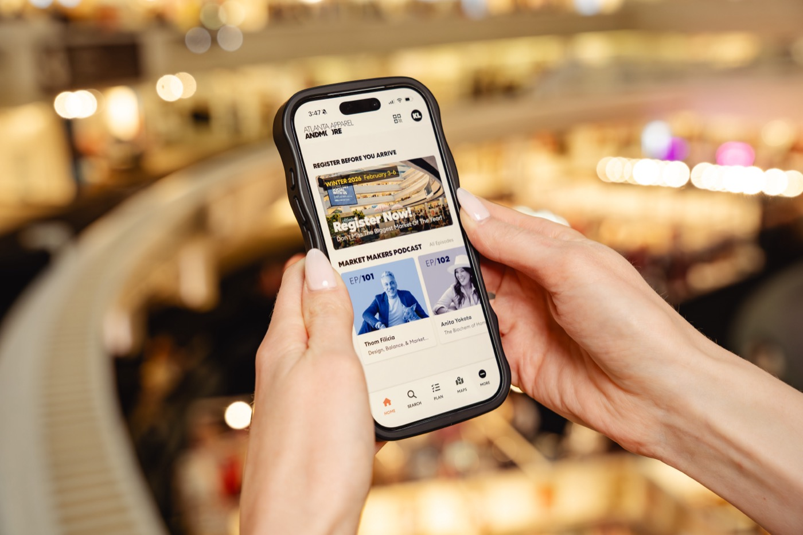
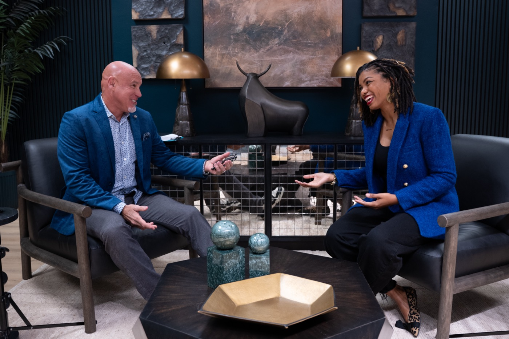
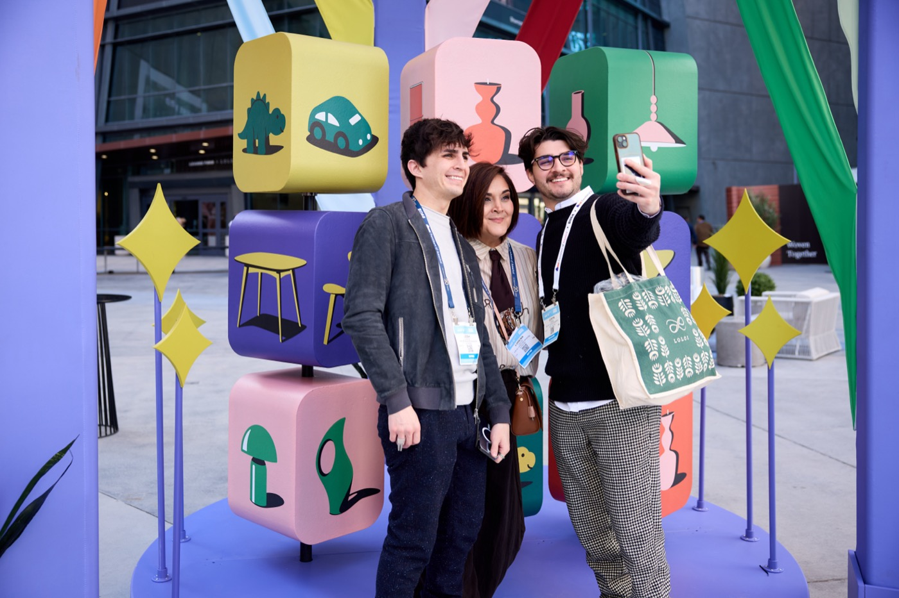
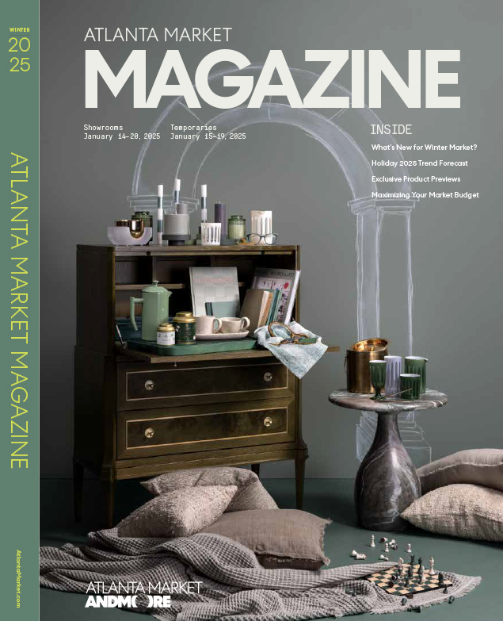
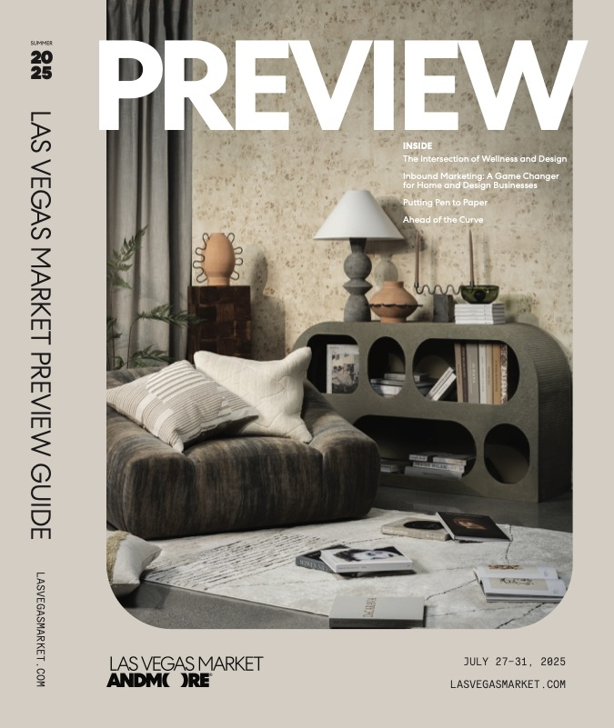
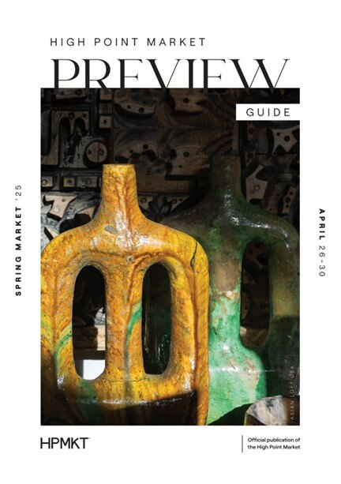

ANDMORE is North America's largest wholesale marketplace operator, running physical markets and design centers across the home, gift, furniture, apparel, and design industries. As VP of Content and Brand Marketing, I lead brand narrative, content strategy, and integrated GTM marketing across a portfolio of 30 markets, spanning 15 websites, 19 print publications, and lifecycle programs reaching hundreds of thousands of buyers and exhibitors globally.
My work centers on building cohesive narrative infrastructure across a matrixed organization where each market has its own identity, buyer community, and stakeholder set. I develop campaign strategy, establish the messaging hierarchies that hold across 30 distinct market identities, and influence editorial, creative, product, sales, and executive teams to maintain a unified brand story without flattening what makes each market distinct. I manage seven-figure annual budgets across media, content, and experiential, with full oversight of media buying and planning. I also led the adoption strategy for ANDMORE's buyer-facing SaaS platform across the tenant base, and have produced 100+ educational events, keynotes, and experiential activations across markets.
As Executive Producer of The Market Makers, ANDMORE's CEO-led podcast, I built the concept and format from scratch as a vehicle for executive thought leadership and market positioning. The show consistently exceeds B2B podcast benchmarks and continues to grow its audience organically.
Currently leading the integration of AI workflows across content production and campaign operations, reducing manual handoffs and improving team output at scale.





